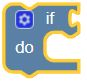
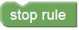
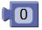

Starting with LamPI release 3.3, we offer another method for invoking devices based on time, alarms or other events. With the new rules engine which is based on Google's blockly developers kit it is possible to create your own rules for LamPI and have them evaluated and executed every 2 seconds.
The editor screen has the following layout: At the right - or anywhere else if defined by the CSS file in use- is the menu area. There are 5 standard commands recognized:
In the header section all rules that are defined are displayed. In the example below that is "cv-room", "console" and "effe". By pressing one of these buttons, the active screen loads with the corresponding rule. The yellow hover defines which rule is visible on the screen at that moment and being worked on. The red border outline of a button tells us that the corresponding rule is active in the LamPI-node.js daemon.
The rules editor can be change from the LamPI Gui by visiting the config section and then select "rules" from the header menu bar. Alternatively the user can also start the rules editor directly from the browse by the following URL: "http://<Your-IP>/rules".
On the screen below you see that the active rule is "cv-room" and there is only one active rule: "effe".

Every rule that is made on the screen will translate in two fields in our rules array: The jrule field which is displayed in the message area of the screen contains the Javascript representation of the rule as it is executed by the daemon if we activate that rule in LamPI. The brule field of the rules object contains the internal rule definition which is used by blockly to build up all visible elements of the rules so that we can change the rule, delete it or store the rule in the database for later use.
The "cv-room" rule defined in our example has the following jrule field for the rule in the database. I have used a pretty print method which makes the rules readible:
if (config['sensors'][14]['sensor']['temperature']['val'] > 28) {
console.log('Warmer, switch Lampi ');
queueDevices(0,'10','00:00:0:00',0,1);
}
else {
console.log('colder');
queueDevices(0,'off','00:00:0:00',0,1);
}
The blockly interface as defined by Goggle offers a set of standard block elements to use in your own rules. However, not all rules make sense in a Home Automation (HA) environment, and some are missing. Therefore, some element have been created that are useful when creating your own rules.
The following LamPI building blocks are available to build your rules:
|  | This is a standard block, optionally, by clicking the * the user may specify "else" and "else if" conditions |
 |
This is a standard block |
 |
This is a standard block |
| This is a LamPI block. | |
|  | Stop Rule, Will stop execution of the rule (indefinately) |
| Timeout, a LamPI block. It will suspend the rule for the coming period of time as specified by the hh:mm:ss specification |
|  | This is a standard block. It takes an integer or float value specified by the user |
| This is a standard block. | |
| This is a standard block. |
| This is a standard block | |
| This is a standard block | |
| This is a LamPI block. This element takes a string as input and displays it on the console. | |
| This is a LamPI block. Similar to the console element, this block will display the string as an alert message on the GUI(s). | |
| This is a standard block. This element will take a string as input on the right and return the length of this string to the left. | |
| This is a standard block |
Sensors are read-only (by the program) in principle. There are several types of sensors possible, the most well known being the tenperature and humidity sensors.
| This is a LamPI block to lookup the last known value of a temperature sensor and pass it to the left (to use in a condition) | |
| This is a LamPI block to lookup the last known value of a humidity sensor and pass it to the left (to use in a condition) | |
Well known devices are switches, dimmers and thermostats. Values of these three type of devices can be read and changed.
| This is a LamPI block used in conditions and can be used to pass the value of the device to the condition. | |
| This is a LamPI block used to set the value of a device to a particular value. The device can be selected using the drop down menu, the value must be passed on the right side. | |
| This is a LamPI block. The current time in milliseconds from 1 jan 1970 is output to the left element. | |
| This is a LamPI block. The sunrise time of today is output in milliseconds | |
| This is a LamPI block. The sunset time of today is output in milliseconds | |
| This is a LamPI block. The number of hours, minutes and seconds is output in milliseconds. |
Under the hood we use the standard available blockly functions provided by Google and we also have our own blockly defnitions put in a dedicated file: /home/pi/www/rules/myBlocks.js. For every custom Blockly element we have to define two functions: (1) a definition file to support the editor in creating our object and (2) a generator file to help generating the right javascript code once we include our own blockly in LamPI.
// ------------------------------------------------------------
// 3.
Blockly.Blocks['devices_set'] = {
init: function() {
this.setHelpUrl('http://www.westenberg.org/');
this.setColour(280);
var str = [];
for (var i=0; i<devices.length;i++) {
str.push( [ devices[i]['name'], devices[i]['name']+"" ] );
}
this.appendValueInput("dev_set")
.setCheck("String") // Only if type is not appendDummyInput
.appendField("set: ")
.appendField(new Blockly.FieldDropdown( str ), "set_1")
this.setPreviousStatement(true, "String");
this.setNextStatement(true, "String");
// this.setOutput(true, "String");
this.setTooltip('Set device value');
}
};
Blockly.JavaScript['devices_set'] = function(block) {
var dropdown_set_1 = block.getFieldValue('set_1');
var value_dev_set = Blockly.JavaScript.valueToCode(block, 'dev_set', Blockly.JavaScript.ORDER_ATOMIC);
var code = '';
var i = lookupDeviceByName(dropdown_set_1);
if (i>=0) {
//code="config['devices']["+i+"]['val']="+value_dev_set;
code="queueDevice( "+i+", "+value_dev_set+", '00:00:00', 0, 1); ";
}
return code;
};
In the two functions above you can see that I added code to read my "device" object and use the available array members for a drop down list n the screen. In the generator file (Blockly.Javascript) you can see that I read the dropdown entry with lookupDeviceByName (a function made by me and also in the myBlocks.js file) and generate the queueDevice command that is availabl in my main LamPI-node.js daemon file. So once the code is "eval()"-uated by LamPI-node it will call that well-known function and the command will be executed.
Note: The queueDevice() function contains some more parameters than just the index of the device (in the config['devices'] array and its SET value. The other parameters are for future extension and will allow execution of the command after a certain time and/or repeating the action for a number of times.
The functions found above define my custom LamPI blocks, and are found in the myBlocks.js file in ~/rules directory. Google suggests that there are 2 separate code pieces tat may live in two separate files. Well, since we use Javascript for the screen definitions and also generate Javascript code, we have put both functions in the same myBlocks.js file. This is much better for the readibility of the code and allows easy debugging, changing etc in order to make your code work.
If you want to create your own custom block elements, it is adviced tat you use the provided Google Block Factory as a starting point. The block factory allows you to create the visual part of the new custom block without too much trouble after which you only need to provide parts of the code to interface wich your own application. The Block Factory shows the block you are working on, its block interface (see above for devices_set) and the javascript code that is being created (se also above for an example).
Just cut and paste the code pieces to your own myRules.js file and make sure that file is "sourced" when you execute your own html/js program. And do not forget to make an entry in the blockly toolbox definition to include your new block and attach it to the menu.
This section explains how to make a new rule using the visible editor.
Every rule that you make is stored in the database. So it is protected against restarts of both client and server. But what if for whatever reason we need to re-initialize the daemon, we would loose all our rules? The solution is to add our precious rules to the "~/config/database.cfg" file so upon an init we would load thee rules to the system.
The best way to do this is to print the configuration on the screen. You can do thsi from the "config" menu, choose "console" and then print the config. The other method is to use the following url: "http://<your-IP>:8080/config". The configuration is output to the GUI, but more importantly it is also output to the console file "~/log/PI-node.log".
Go to this file and add the complete JSON string to the "~/config/database.cfg" file in the rules section.
Although rules work OK in most circumstances, there are situations or things to be careful about.
This chapter explains how to build your own rule, ranging from a simple console logging to a complicated timing example. Each example can be started with "http://<your-IP>/rules.
The first example is a simple temperature sensing example for a rule called "ardeche". We have a temperature sensor lm75-3 defined in the database.cfg file, and when the temperature measured exceeds the 28 degrees (celcius) we "do" the following jrule: write to the console the text: "More than 28 degrees", and otherwise write to the console the text: "Less than 28 degrees".

What you will find that the use of this rule is rather limited. The rule will only write to the console and apart from the administrator nobody will read the console of the LamPI-node.js daemon too often.
Using the example above, there are circumstances where we want to take another type of action than just a console message when the temperature reaches a predefined level. This example exmplains to to swich a device on when the temperature reaches a certain value.
Please do not question yourself whether it makes senso to switch lightbulbs as a function of measured temperature ... thisexample merely shows the possibilities of the rule editor and the run-time environment.

The example above works as desired: As soon as the temperature measure by sensor "Outside" exceeds 28 degrees Celcius the console will displa a message and the "lamp left" is switched on with value 14 (It is a dimmer).
However, although the example above works as desired, it has a major drawback; Every time the rules is evaluated - and this is once every 2 seconds - the outcome will make that a 433MHz message is sent to switch the lamp on or off. This may be our intention, but normally we would only like to send a message when the lamp should change state, so once when the temperature increases and once when it drops below 28 degress Celcius.
So let's make the same example but only send messages to the 433 devices when we need to change status (we left the console messages out):

So when using the rule above, the amount of transmissions over the air is reduced significantly, and apart from doing some "eval" uations we use no critical resources of the computer.
Switching on the lights in your room when it becomes dark is one of the most used rules in LamPI. Of course it is possible to use the LamPI timers for his purpose, but rules work equally well.

And there is a little variation on the "stop rule" action thich is shown below: The Timout action will specify a period of time in which the rule will NOT be active and will be activated again after that period of time. In the situation below, the rule will be disabled for a period of 2 minute, and then enable again (followed be a period of 2 minutes timeout etc etc etc).

In this case, the "else" part should have been omitted and it is there for the sole purpose of showing any progress on the console. The "Timout" rule however is NOT constrained to be used in the "do" clause only, although in most cases one would not need to use the "else" clause in these kind of rules
July 05, 2015